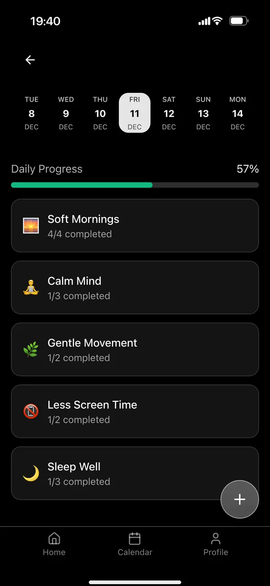
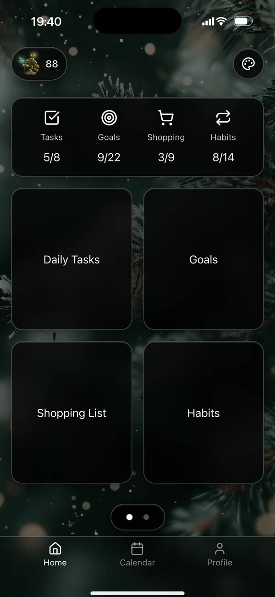

A cozy habit tracker that grows with you
Habit trackers often feel like a scoreboard. SelfOS grows a little bonsai instead. Every day you tick a habit — or take care of yourself in any other way — your tree grows a bit. Miss a day or two, and it simply waits for you.


How it works
- Habits live in routines. Group them the way your day flows — Morning, Calm mind, Movement — each with its own emoji and cover.
- Every day you show up counts. A ticked habit, a glass of water, a finished task or a workout all keep your streak going.
- Your bonsai grows with your streak: a sprout, a sapling, a young tree, a blooming tree and, after a full year, a glowing Tree of Life. From day 14, fireflies circle it.
- See your progress. The calendar shows your month at a glance; stats show how often you kept each habit and your best run.


Gentle by design
Life happens. Up to two missed days in a row don't break your streak. If you're away longer, your tree starts again from a sprout — and there's a medal for coming back.
Tick habits without opening the app
Interactive widgets on iPhone and Android let you tick habits right from your home screen. On Apple Watch, today's list is on your wrist.
Private by default
No account, no sign-up. You open SelfOS and start, and your entries stay on your phone.
Free and Premium
The free version includes two routines with up to five habits each. Premium adds unlimited routines, habit schedules for specific days of the week and your own photos as covers.
More than habits
SelfOS also has tasks, goals, water, sleep, nutrition, activity and shopping lists. Turn on only what you need.
Need ideas to start? Try the New Year Reset Checklist.
Plant your tree today
Free on iPhone and Android. No sign-up — just open it and start.
FAQ
Is SelfOS free?
Yes. It's free to download and use, with an optional Premium subscription.
What happens if I miss a day?
Nothing dramatic. Up to two missed days keep your streak; after three, your bonsai starts again.
Can I tick habits without opening the app?
Yes, from interactive widgets on iPhone and Android, and on Apple Watch.
Do I need an account?
No. You open the app and start; your entries stay on your phone.